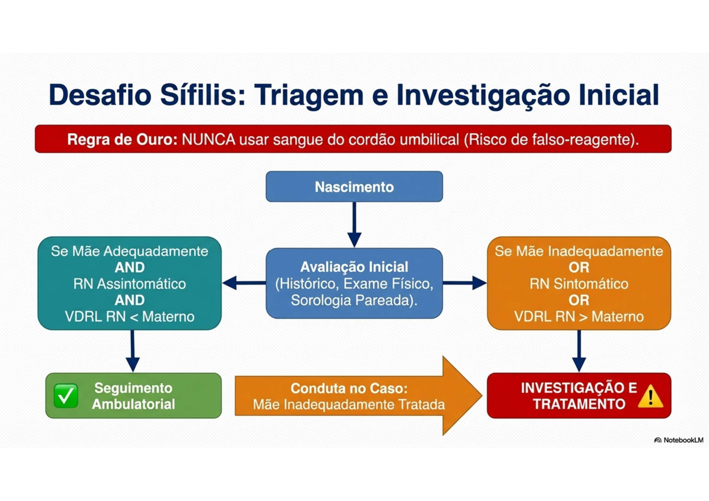
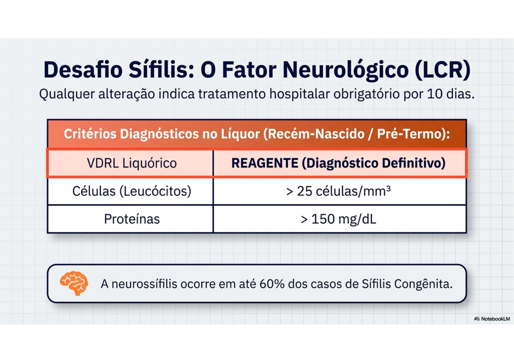
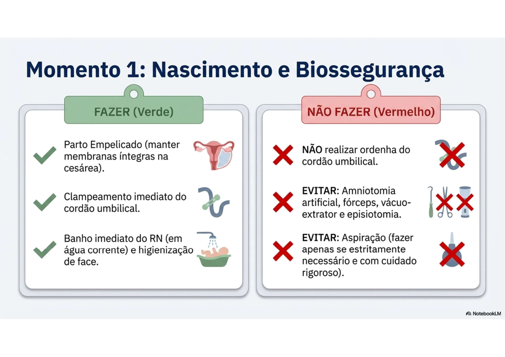
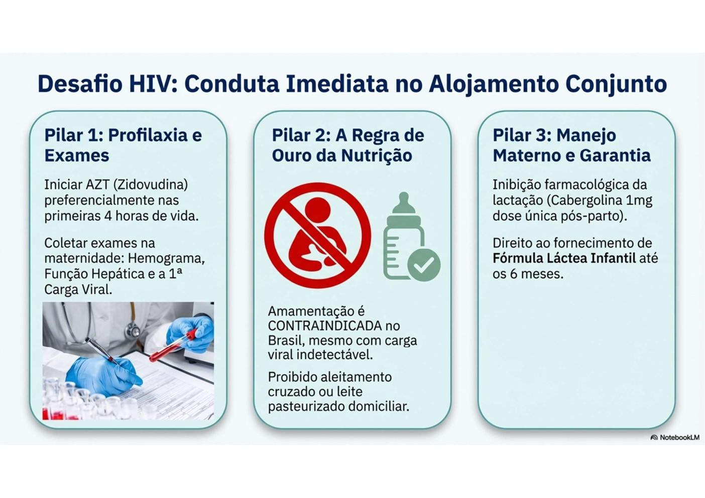
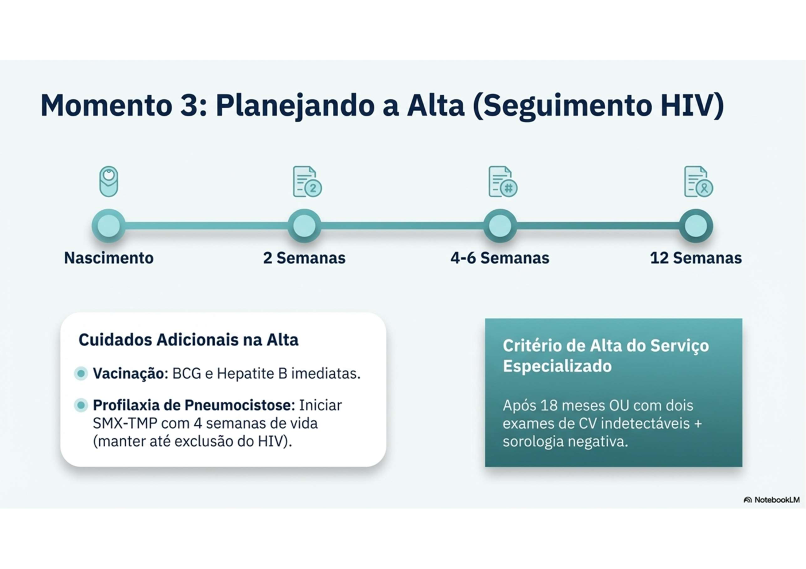

TORCHS — Infecções Congênitas
O Acrônimo TORCHS
| Letra | Agente | Destaque Diagnóstico |
|---|---|---|
| T | Toxoplasma gondii | Calcificações cerebrais DIFUSAS + hidrocefalia + coriorretinite |
| O | Outros (sífilis, HIV, HBV, HCV, Zika) | Ver seções específicas |
| R | Vírus da Rubéola | Tríade: surdez + cardiopatia + catarata (1º trimestre = mais grave) |
| C | Citomegalovírus (CMV) | Mais frequente IC; calcificações PERIVENTRICULARES; surdez neurossensorial |
| H | Herpes simples (HSV) | Vesículas, encefalite, sepse neonatal |
| S | Treponema pallidum (Sífilis) | Única prevenível com rastreamento + penicilina pré-natal |
Transmissão vertical: via transplacentária (maioria) + canal de parto (HSV, HIV, HBV) + amamentação (HIV)
Toxoplasmose Congênita
Risco de transmissão: ~40%, aumenta com o avançar da gestação. Quanto mais precoce, mais grave.
Clínica (70% assintomáticos ao nascer):
- Tétrade de Sabin: hidrocefalia + calcificações cerebrais difusas + coriorretinite + estrabismo/nistagmo
- Outros: microcefalia, convulsões, icterícia, hepatoesplenomegalia, anemia, trombocitopenia
Diagnóstico no RN:
- Sorologia (IgM e IgA sérica) + PCR sangue/LCR + fundoscopia + USG de crânio
- LCR: padrão linfomonocitário
Tratamento (até 1 ano de vida):
- Pirimetamina + Sulfadiazina + Ácido Folínico
- Prednisolona adicional se alteração neurológica ou ocular ativa
CMV Congênito
Causa mais frequente de infecção congênita (com transmissão intrauterina)
Clínica (90% assintomáticos ao nascer):
- Petéquias, hepatoesplenomegalia, icterícia colestática, microcefalia
- Calcificações periventriculares (diferente da toxo que são difusas)
- Perda auditiva neurossensorial (sequela mais frequente — 25% dos casos)
Diagnóstico:
- PCR CMV na urina ou saliva até 21 dias de vida (padrão ouro para confirmação)
- BERA (potencial auditivo evocado)
Tratamento:
- Valganciclovir VO 6 meses (cases sintomáticos com acometimento do SNC)
- Ganciclovir EV alternativo
Rubéola Congênita
Maior risco: 1º trimestre (quanto mais precoce, mais malformações)
Tríade clássica (Síndrome da Rubéola Congênita — SRC):
- Surdez neurossensorial (sequela mais frequente)
- Cardiopatia: persistência do canal arterial (PCA) + estenose da artéria pulmonar
- Catarata (leucocoria) + retinopatia em "sal e pimenta"
Outros sinais:
- Microcefalia, hepatoesplenomegalia, trombocitopenia, púrpura ("blueberry muffin")
- PIG (pequeno para a idade gestacional)
Diagnóstico: IgM reagente para rubéola + PCR positivo no RN
Prevenção: Tríplice viral (12 meses) + Tetraviral (15 meses). Contraindicada na gestação (vírus vivo atenuado)
Sífilis Congênita — Visão Neonatal (ver também sifilis.md em GO)


Transmissão vertical: 70–100% em gestantes não tratadas
4 Critérios de Tratamento Materno Adequado (TODOS precisam ser SIM):
- Medicamento = Benzilpenicilina Benzatina
- Início ≥30 dias antes do parto
- Esquema correto para o estágio
- Intervalo entre doses respeitado
Conduta no RN:
| Situação | Conduta |
|---|---|
| Mãe adequadamente tratada + RN assintomático + VDRL RN ≤ materno | RN exposto — acompanhamento ambulatorial (não é SC) |
| Qualquer critério de tratamento = NÃO | Investigação completa + tratar |
| RN sintomático (independente da mãe) | Investigação completa + tratar |
Sinais precoces de SC (<2 anos): hepatomegalia, icterícia, rinite muco-sanguinolenta ("coriza sifilítica"), rash maculopapular em palmas e plantas, petéquias, periostite, sinal de Wimberger
Sinais tardios de SC (>2 anos): tríade de Hutchinson (dentes, ceratite intersticial, surdez), nariz em sela, fronte olímpica, tíbia em sabre
Tratamento do RN com SC:
- Sem neurossífilis: Benzilpenicilina Cristalina IV ou Procaína IM — 10 dias
- Com neurossífilis: Benzilpenicilina Cristalina IV APENAS — 10 dias (única que atravessa BHE)
Acompanhamento: VDRL com 1, 3, 6, 12 e 18 meses; 2 negativos consecutivos = encerrar
HIV na Gestação e no RN




Rastreamento obrigatório: Teste rápido HIV na 1ª consulta pré-natal e no momento do parto
Prevenção da Transmissão Vertical:
- TODAS as gestantes HIV+: TARV (Terapia Antirretroviral) para carga viral indetectável
- Durante o TP/cesárea: AZT EV (desde o início do TP até clampeamento do cordão)
- Pode ser dispensado se CV indetectável + boa adesão durante toda a gestação
- Amamentação é CONTRAINDICADA — oferecer fórmula até 2 anos
Via de parto:
- CV detectável (≥ 1.000 cópias/mL) → cesárea eletiva com 38 semanas
- CV indetectável → parto vaginal permitido
Profilaxia do RN:
| Risco | Esquema | Duração |
|---|---|---|
| Alto risco (mãe sem TARV, diagnóstico no parto, CV desconhecida ou elevada) | AZT + 3TC + RAL¹ | 28 dias |
| Baixo risco (mãe com TARV, CV indetectável) | AZT apenas | 28 dias |
| Pré-termo <34 semanas | AZT apenas | 28 dias |
¹ RAL contraindicado em RN com IG <37 semanas → substituir por AZT + 3TC + NVP (14 dias)
Diagnóstico no RN: PCR para HIV ao nascimento, 1 mês (após término da profilaxia) e 4 meses
Hepatite B na Gestação e no RN
Rastreamento: HBsAg obrigatório no pré-natal (1º trimestre)
Prevenção no RN (mãe HBsAg +):
- Vacinação hepatite B nas primeiras 12–24h de vida
- Imunoglobulina HBV (IGHB) nas primeiras 12–24h de vida
- Amamentação permitida (exceto fissuras no bico do peito)
Prevenção no RN (mãe HBsAg desconhecida):
- Vacinar nas primeiras 24h; rastrear a mãe urgente
Tabela Comparativa TORCHS — Calcificações e Achados Chave
| Infecção | Calcificações | Surdez | Cardiopatia | Ocular | Diferencial |
|---|---|---|---|---|---|
| Toxoplasmose | Difusas (gânglios da base + córtex) | Rara | Não | Coriorretinite | Hidrocefalia + calcificações difusas |
| CMV | Periventriculares | Sim (frequente) | Não | Normal ou coriorretinite | PCR urina/saliva <21 dias |
| Rubéola | Vasos cerebrais | Sim (profunda) | Sim (PCA, estenose AP) | Catarata + retinopatia | "Sal e pimenta" no fundo de olho |
| Sífilis | Não | Sim (tardia) | Não | Coriorretinite | Wimberger, nariz em sela |
| HSV | Não | Não | Não | Ceratoconjuntivite | Vesículas, encefalite |
Perguntas que o Professor Provavelmente Vai Fazer
- Qual infecção congênita é a mais frequente? → CMV
- Qual tem maior risco de transmissão no 1º trimestre? → Rubéola (tríade clássica)
- Diferença entre calcificações da toxoplasmose e do CMV? → Toxo = difusas; CMV = periventriculares
- O que justifica a proibição da amamentação no HIV? → Transmissão pelo leite materno (25% dos casos de TV)
- Qual o único tratamento aceito para sífilis gestacional? → Penicilina G (nenhuma outra protege o feto)
- Critério mais frequentemente não cumprido que torna mãe "inadequadamente tratada"? → Diagnóstico e tratamento no parto (<30 dias)
Alertas OSCE ⚠️
- CMV: PCR na urina/saliva até 21 dias de vida — depois disso não confirma IC (pode ser infecção pós-natal)
- Toxoplasmose: calcificações DIFUSAS (não confundir com CMV periventriculares)
- Rubéola = surdez + PCA (não CIV como 1ª cardiopatia)
- HIV: amamentação contraindicada NO BRASIL — mesmo com carga viral indetectável (diferente da OMS para países de baixa renda)
- Diagnóstico de SC só no parto → critério 2 não cumprido → mãe sempre inadequadamente tratada
Fonte
- Gerado a partir de:
conteudo_torchs.md(Aulas 02 Teórica + Prática Infecções Congênitas + Casos TORCH) - Complementado com:
Protocolo_Sífilis_e_HIV_Neonatal.pdf(lido visualmente — via de parto por carga viral, esquemas profiláticos RN) - Seções consultadas: toxoplasmose, CMV, rubéola, sífilis congênita, HIV, hepatite B